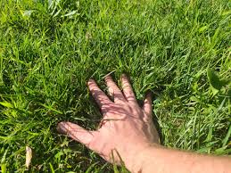
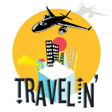

These are my hobbies!
I have many hobbies. Some of my hobbies include swimming, climbing trees, gaming and so on. My favorite hobbies include travelling and going outside.Traveling opens up a world of discovery, allowing you to step beyond the familiar and embrace new cultures, landscapes, and perspectives. It offers a sense of adventure, whether you're exploring ancient ruins, relaxing on a pristine beach, or wandering through vibrant city streets. Meeting new people and experiencing different ways of life enriches your understanding of the world, making every journey a chance to grow. The thrill of trying unfamiliar foods, hearing new languages, and immersing yourself in unique traditions creates lasting memories that shape who you are. Traveling isn’t just about reaching a destination—it’s about the excitement of the journey and the stories you collect along the way.

 Back to homepage